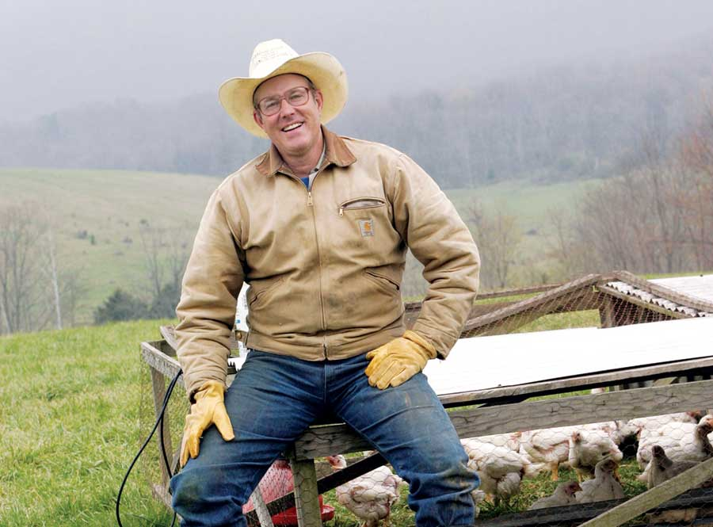
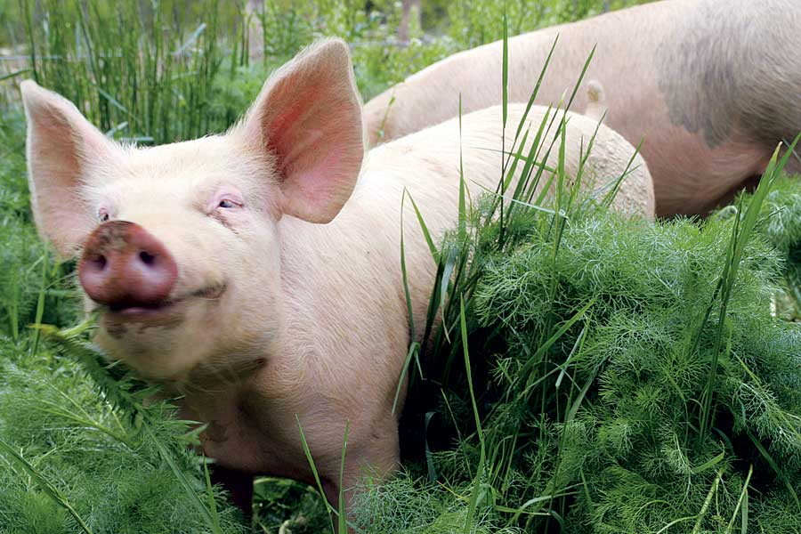

Dear Mother: October/November 2009
Reader letters about Joel Salatin, homemade butter, outdoor wood boilers, and more.
Letters from our readers
October/November 2009
Our interview with “beyond organic” farmer Joel Salatin, Everything He Wants to Do is Illegal, struck a chord with many of you. Salatin has been a prominent innovator and advocate for integrated small-scale farming and direct-to-consumer marketing for many years. And there are plenty more like him - “maverick” farmers growing better food using more sustainable methods. There’s definitely a local food movement underway; let’s hope there are enough “locavores” out there to make small-scale farming a not-too-risky, honorable way to earn a decent living once again.
We continue to receive lots of pro and con comments about our discussion of population issues; you can read them online and join the conversation at Planning for a Sustainable Human Future and Three Mountains We Must Climb.
Joel Salatin Is My New Hero!
I stumbled upon Everything He Wants to Do is Illegal while doing research for my orchard. This is exactly the kind of information people in this country need to hear. Processed agrifoods need to be wiped out and replaced by small farms! Believe me, the “food police” are very real.
I’m doing a lot of research as I make my plans to become a farmer. I have discovered that there is a huge groundswell of both producers and consumers who are latching onto the truths that Salatin speaks. We need to listen to people who are willing to say that the emperor has no clothes, rather than trying to maintain an agrisystem that is slowly poisoning our population!
Jerry Klingerman
Winesburg, Ohio
Considering Ethical Meat
I’m proud to say that I’ve been a vegetarian for two years now, and I don’t miss meat at all. I choose not to consume any meat because of the inhumane industry that Mr. Salatin is fighting against. If all farms operated as well as his does, then I might consider eating meat again. I don’t think there is anything wrong with eating cows, pigs and chickens. I just don’t like the way the industry treats them before, during and after slaughter.
Michelle Trammell
Winchester, Virginia
A Healthier, More Natural Diet
Salatin is responsible for hundreds, if not thousands, of people eating a more natural and healthier diet. His middle-finger salute to governmental interference in our national food supply will be what makes him infamous. His farming methods should be taught to everyone who raises animals for slaughter, from 4-H clubs to universities. Perhaps in 10 to 15 years, as we older humans raised on agrichemicals die from diseases tracked to the industrial pollution of our food supply, our children will see that there is no future if we stay with chemical farming.
Laurie Cohen
San Diego, California
Lauding the Maverick Farmers
Joel Salatin, I hope I get to meet you one day; you’re great. I laughed, I cried, I took notes - what a great interview. I wish farmers didn’t need to be mavericks, but from the sound of your journey, they do. Meanwhile, my relatives in Indiana are being paid by this great government of ours not to farm their land. How that program still exists is beyond words.
Troy Henley
Columbus, Ohio
Never Too Late
The interview with Joel Salatin got me thinking that I’ve missed my calling. Although I enjoy vegetable gardening, I never thought of myself as a potential farmer. After reading the article, I felt sad that I wasn’t 20 years old with my whole future ahead of me. Had I access to the training Mr. Salatin offers in sustainable agriculture, I might have gone in that direction. I haven’t gardened in 20 years, as I now live in a third-floor apartment on the north side of a building without access to arable land. I miss the satisfaction of aiding in the creation of my own food. As soon as I retire, I will begin again, and this time I’ll also raise chickens. Keep up the good work. I look forward to every issue and I read it cover to cover.
Guy Pehaim
Dundalk, Maryland
Salatin’s Methods More Humane
I just recently read Mr. Salatin’s book Everything I Want to Do Is Illegal and absolutely loved it. I’m intrigued by the methods that he uses, and that he’s able to maintain a “beyond organic” farm in this day and age. His approach to land management is not only beneficial to the land, but extremely humane to the animals which live off of it.
Shelly Gerber
Bloomington, Indiana
Not All Outdoor Wood Boilers Are Created Equal
Opening the last two issues, we were taken aback to see advertisements for outdoor wood boilers. Some outdoor wood boilers are fairly clean and efficient, but most states in the United States allow even the dirtiest, most polluting models to be installed. Your readers should know the difference.
Unregulated outdoor wood boilers are the scourge of the clean wood-burning movement, and continue to give wood burning a bad name. Only recently has the U.S. Environmental Protection Agency (EPA) set standards for outdoor wood boilers, so if you buy one, no matter what state you live in, make sure the boiler is Phase II EPA certified. You will be doing the environment, your neighbors and yourself a huge favor. Better yet, look into an indoor wood furnace or boiler, which are smaller and generally much more clean and efficient.
Efficient models will save you thousands over the unit’s lifetime because they use much less wood to make the same amount of heat - saving you countless trips to the wood pile. (See Is Wood Heating Right for You?.)
Wood can be a fantastic renewable, low carbon and local fuel source. As with all renewables, Europe is decades ahead of us in developing wood as a mainstream, clean energy source. In parts of Austria, for example, installing a fossil fuel furnace is strongly discouraged or even disallowed because their pellet furnaces are so efficient and clean. While the EPA was allowing sales of unregulated outdoor wood boilers to flourish, Europeans were investing in R&D and incentives to develop products that heat entire communities without the air quality concerns inherent to outdoor wood boilers.
This is a great year to buy or upgrade your woodstove or furnace. The federal government is giving a 30 percent tax credit, up to $1,500, for high efficiency certified woodstoves and furnaces. And many states offer additional tax incentives. For more details on the federal and state incentives, go to forgreenheat.org.
John Ackerly
Takoma Park, Maryland
Hates Our ‘Wacko Spew’
I tend to “throw up” in my mouth just a little more each and every time I read your wacko “save the Earth” spew.
At Mother Earth News, you guys understand poultry, right? Do you remember the story of Chicken Little? The sky is not falling! Just as there is no such thing as man-made global warming.
Also, this idea of controlling human populations is downright scary.
This was once a great magazine about becoming self-sufficient. What happened? Did a bunch of liberal hippies overtake your headquarters?
I will not be renewing my subscription.
John Miller
Emporia, Kansas
A Moral Imperative
Whether you believe in global warming or not, it’s impossible to ignore the environmental challenges facing us today. I believe it is incumbent upon each of us to make significant changes in our lives to help ensure that we have a healthy planet to pass on to future generations.
There is, I think, a moral imperative for each of us to live in ways that ensure enough food, water and energy to sustain the world’s population; to live in ways that restore the health of our soil, air and water; and to live in ways that teach our children the value of Mother Earth. And if those lifestyle changes also help abate the global warming situation (that some peoplethink is a hoax), so much the better.
Lynda King
Bolton, Massachusetts
Loves Mantis’ Dual Mower
I was interested in the Mowing Down Pollution article by Ed Smith, but disappointed that he did not include the Mantis Cordless Reel Mower in his tests. I had been using my dad’s old (as in antique) heavy reel mower for the past two years, but decided I didn’t want quite that much exercise any more. After researching the options and wanting to find a U.S.-made cordless electric, I decided on the Mantis Mower (Mantis is based in Philadelphia) and am really happy with the decision. Not only is the mower lightweight and easy to use, but its compact size makes it very easy to store.
It can also be used as a manual mower. I can mow the same area that I did with the old manual reel mower in half the time. The battery charge only lasts 30 to 45 minutes depending on how tall the grass is, but any lawn that takes longer than that to mow is probably too large anyway. A couple of times when the grass has gotten taller than it should have or has been a bit damp when I mowed, the battery ran out and it was great to be able to finish the job manually and, dare I say, almost as easily, if not as quickly, as in the fully charged battery mode.
Pat Archambault
Sidney, New York
We’ve discovered that Mantis is no longer selling this reel mower; however, both Brill and Sunlawn have electric reel mowers available. - MOTHER
Loves the Reader Tips
Most of the articles in your magazine don’t apply to the way I live now, and I was going to let my subscription expire. Then I realized that I get enough information just from your reader tips and Country Lore for the subscription to be worth the price - so I have dug my renewal form out of the trash and am sending it in. Keep up the good work.
Joe Campbell
Hunter, Oklahoma
Worried About Bees
I wanted to comment about bees. I live in Southern California and see bees lying on the ground every day. When I see them, I bend down to pick them up. The bees that are still alive are clearly disoriented and some have curled legs. Oftentimes they are hyper, walking around in circles. Sometimes they just sit there and don’t move at all, like they are paralyzed. I try to calm the hyper ones and awaken the others. I envision light surrounding them and try to clear their heads. A few times they have recovered and flown off. Most of the time - though their wings are fine - they do not fly ever again.
I have so much love for creatures and now the bees are a part of my family. I pet them and hold them as they die, like they are my sisters and brothers. I take them to the flowers and see if they want a last drink. Sometimes they do and it brings tears to my eyes. Thank you for letting me express my pain here.
Denise Bennett
Laguna Beach, California
You can read the latest about the honeybees in Colony Collapse: Are Potent Pesticides Killing Honeybees? - MOTHER
Young Gardener Is a Great Example
We just read the article My Introduction to Self-reliance by Treska Lydia Stein. Not only were we impressed by the quality of this young woman’s writing, we also greatly appreciated that Mother Earth News chose to publish an article written by someone from the younger generation. We thoroughly enjoyed reading about her experiences, and her story warmed our hearts so much that we just had to write in about it! Treska and accomplished young adults like her are a great example for the rest of us to live by!
Emma and Christopher Magnusen
Spokane, Washington
Sensational Swiss Chard
The response to my Swiss chard offer (Dear MOTHER: August/September 2009) has been amazing. I never knew so many people liked chard! I have now filled 121 requests, but have more than 400 waiting. I have only one small plant left that is maturing its seed, and it won’t fill 400 requests. I’d like to let readers know they may have to wait, maybe even until next year, and ask them to be patient.
It’s been an amazing experience hearing from gardeners from every state (except Alaska and Hawaii, so far), and Canada, as well. There have been so many gracious notes, with little stories of gardens and farms, and good seeds sent in exchange. Most outstanding is the gentleman who is 94 years old and still gardening - may I emulate him! This has been a very unusual and heartening experience to hear from so many good people of so many sorts from all over the country!
Finally, MOTHER, your editorial titled Are We Losing Sight of Our True Goals? was outstanding. You’ve grown from just an agency to help people build that chicken coop or adobe house to a clear voice for responsible living and responsible politics in a time of crisis. I don’t think I have ever saved an editorial before, but this one is for keeps.
Jeffrey Dickemann
Richmond, California
Butter Recipe Cream of the Crop
Use a Bell for Better Butter
I loved How to Make Butter and Buttermilk - I’ve never had better butter! I like the extra info on your website in How to Make Butter Without a Separator, Without a Churn, and Without Difficulty. I want to mention that with a butter bell you never have to put your soft butter in the fridge, where it can become a rock-solid mass. You put a little water in the bottom of the crock, put the butter in the “bell” attached to the lid, and invert it so it creates an airtight seal. The butter bell protects the butter from light and air, and keeps it soft and fresh. I’ll never buy butter again!
Jessie Coburn
Lemon Grove, California
Great Article, Impressive Magazine
Last week, I picked up the June/July issue on my way through the grocery store. I hadn’t seen an issue for several years, after being a subscriber for many years before. I was so impressed, I re-subscribed. So much good information! After reading the letters in Dear MOTHER: June/July 2009, I need to read the back issues that stirred up so many comments. I’m impressed someone has the backbone to speak out about issues that need attention.
Also, How to Make Butter and Buttermilk was excellent. I grew up in the Midwest and we always had fresh milk, cream and, thus, homemade butter and cottage cheese. Keep up the good work!
Elizabeth Muich
Monroe City, Missouri
Clay Oven a Hit!
The pizza that comes from an outdoor clay oven has the best flavor ever! Even having to buy most of the bricks and cinder blocks for the base, mine cost less than $100 to make. The best part: not heating the whole house in the summer as we make pizza and bread, and our family favorite, fresh pita bread. For anyone who likes to bake, I highly recommend picking up the book Build Your Own Earth Oven by Kiko Denzer.
Robyn Wright-Lynema
Belding, Michigan
Read Denzer’s Build Your Own Wood-fired Earth Oven about how to build and bake in an outdoor oven. - MOTHER
Reader Tips for Raising Chickens for Meat
Try a Homemade Plucker
I’ve been enjoying your magazine for several years now and am always amazed at how each issue seems to address whatever we’re currently working on or considering. Keep the relevant topics coming!
In Raising Chickens for Meat, you discussed plucking by hand and mention the Featherman automatic plucker. I was surprised that you didn’t mention building your own plucker. My husband built ours using Anyone Can Build a Tub-Style Mechanical Chicken Plucker by Herrick Kimball. The cost was much lower than purchasing a ready-made plucker, the instructions were clear and easy to use, and we can now pluck up to four chickens in about 20 seconds.
Gina Underwood
Sterling, Nebraska
Part of that relevance you see is possible thanks to the thousands of readers who have joined our Editorial Advisory Group. These folks take surveys to tell us which topics readers want most. We would love to have more of you take the surveys. - MOTHER
More Tips for Processing Chickens
I enjoyed reading Raising Chickens for Meat. The article was inspiring and informative, but it lacked specific how-to on the subject of evisceration.
I see poultry processing as a down-to-earth craft that is well worth learning, and I enjoy teaching this craft to those who are interested in learning.
With that in mind, I created the website How to Butcher a Chicken, which provides a clear, detailed, step-by-step photo tutorial and explanation of the backyard butchering process. It is the exact information I needed, but couldn’t find, when I started raising birds for meat a decade ago.
I invite any of MOTHER’s readers who want to learn the finer points of properly butchering their poultry to stop by.
Herrick Kimball
Moravia, New York
|
 RICHARD LORD Joel Salatin with a few of his chickens at Polyface Farm in Virginia. |
 RICHARD JEONG One of Joel Salatin’s pigs neck-deep in greens at Polyface Farm. |
 L. KEVIN & DONNA PHILIPPE-JOHNSON L. Kevin and Donna Philippe-Johnson make savory rustic breads in their outdoor clay oven. |